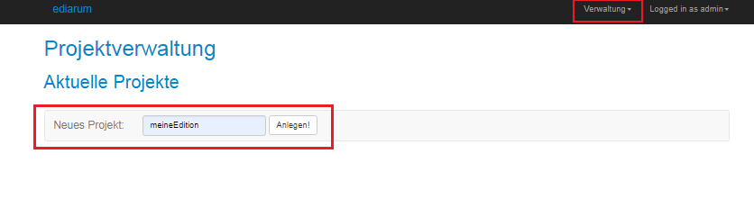
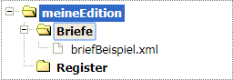

In der Datenbank muss für Ihre Edition ein Projekt mit einer standardisierten
Ablagestruktur und einigen standardisierten Settings vorhanden sein. Um die Standards
automatisiert korrekt anzulegen, benutzen Sie die ediarum.DB-App.
Sie sind im Dashboard Ihrer eXist-db mit Admin-Rechten angemeldet.
-
Öffnen Sie die ediarum.DB-App.
-
Wählen Sie in der App das Menü aus.
- Schreiben Sie in das Feld Neues Projekt einen
Projektnamen für Ihre Edition und klicken Sie auf
Anlegen!.
Den Projektnamen müssen Sie später für die Datenbankverbindung angeben.
Verwenden Sie keine Umlaute, Leer- oder Sonderzeichen!

In der Datenbank wird ein neuer Ordner mit
dem gewählten Namen angelegt.
Die angezeigte Projektliste enthält nun Ihr Projekt. Wenn Sie Ihr
Projekt anklicken, sehen Sie die Ordnerstruktur, in der die XML-Dateien Ihrer
Edition gespeichert werden. Später, nachdem Sie das Basis-Setup abgeschlossen
haben, können Sie die Ordner im Oxygen XML Author
umbenennen.

Die
ediarum.DB-App zeigt Ihnen nur den
data-Ordner der Projektstruktur. Wenn Sie das Projekt in der
eXist-db internen xQuery IDE
eXide oder dem
Oxygen XML Author öffnen, sehen Sie die weiteren von
ediarum.DB angelegten Ordner:
- data: Enthält Briefe, Registerdateien, Dokumente, Einleitungen etc. (je in Unterordner gegliedert), also alles, was die Editorinnen und Editoren bearbeiten. Dieser Ordner wird den Editorinnen und Editoren zugänglich gemacht.
- druck: Kann später für Daten der Druckausgabe genutzt werden.
- exist: Enthält Routinen-Skripte, die mit der Datenbank zu tun haben, wie bspw. Rechteänderungen.
- external_data: Hier können eingebundene, externe Daten gespeichert werden, z.B. GND- oder Zotero-Datensätze.
- oxygen: Enthält Skripte, die für die Nutzung von
ediarum und eXist-db aus
Oxygen XML Author heraus wichtig sind sowie
benutzerdefinierte Skripte, die in Oxygen XML Author eingebunden werden.
- web: Enthält alle Skripte zur Webentwicklung.